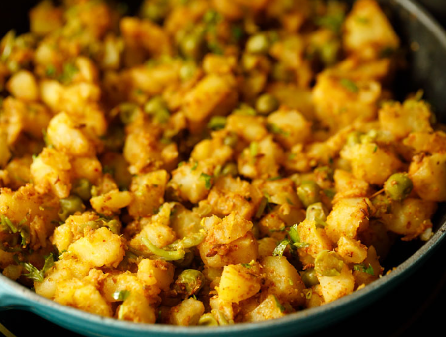
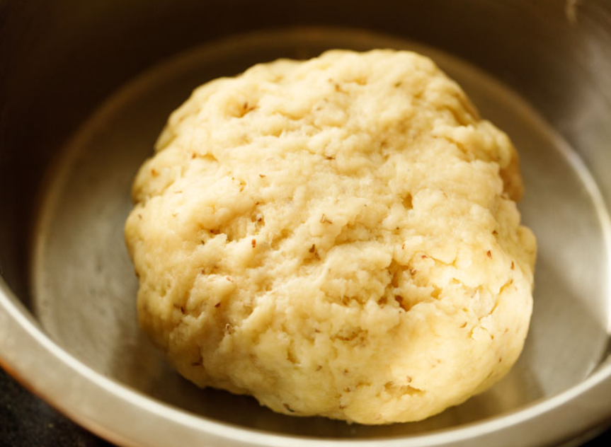
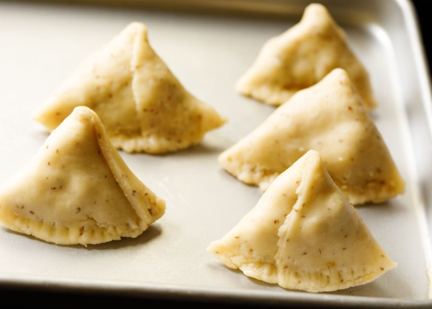

Samosa Recipe (Punjabi Samosa)
Making the Potato Stuffing
1.The first step to homemade samosa is to cook the potatoes and peas for the filling.
To cook the potatoes and peas in a stovetop pressure cooker: Place 3 medium-sized whole potatoes (300 to 450 grams) and 2 to 2.5 cups water in a 3 or 4 litre pressure cooker. On top of the potatoes carefully set a small trivet and pressure cooker-safe bowl with ½ cup green peas. Pressure cook for 5 to 6 whistles or 7 to 8 minutes on medium to medium-high flame.
If using an Instant Pot: Place 3 medium-sized whole potatoes in the steel insert of a 6 quart IP. Add 2 cups water. Place a trivet on top of the potatoes, and on top of the trivet set a bowl with ½ cup of green peas. Pressure cook on high for 20 to 25 minutes.
2. For the stovetop pressure cooker, remove the lid after all the pressure falls in the cooker. For the Instant Pot, do a quick pressure release after 5 to 7 minutes. Check with a knife or fork to see if the potatoes are cooked well.
The knife or fork should be able to slide through easily if the potatoes are cooked properly.
If the potatoes are undercooked, then cook them for a few more minutes using the pressure cook function. Once done, drain the potatoes and peas in a colander and set aside to cool.
cooked potatoes and peas
3. Next, toast the spices. This will help to release their flavors and should not be skipped!
To a small frying pan over low heat add ½ inch cinnamon stick, 1 clove (optional), 1 green cardamom, 3 black peppercorns, ½ teaspoon cumin seeds, ½ teaspoon fennel seeds and 2 teaspoon coriander seeds.
Heat the spices for just a few minutes until aromatic, being careful to not burn.
Indian spices in a skillet being roasted
4. Remove the spices from the heat and allow to cool completely. Then, put them in a spice grinder or small mixer-grinder jar.
toasted spices in a grinder
5. Grind the toasted spices to a semi-fine powder, and set aside.
TIP: If you are pressed for time to roast and grind the spices, then I have a solution for you.
Mix 2 teaspoons ground coriander (coriander powder), ½ teaspoon ground cumin (cumin powder), ½ teaspoon ground fennel (fennel powder) and ½ teaspoon garam masala powder in a small bowl.
Add this prepared spice mix at step 9 when the green peas and remaining ground spices are added.
6. Peel the skin off of the cooked potatoes, and chop them in ½ to 1 inch cubes.
cooked cubed potatoes to make Punjabi samosa filling
7. In a small skillet, heat 1 tablespoon oil. When the oil becomes medium hot then reduce the heat to low.
Crackle ½ teaspoon cumin seeds until fragrant. I used mustard oil as it really adds a punch in the stuffing. You can use neutral oil like sunflower oil, safflower oil, grapeseed oil or canola oil.
hot oil and cumin getting crackled in it in a frying pan
8. Keep the heat on low and add 1 teaspoon finely chopped or minced ginger and 2 teaspoons finely chopped green chillies. Sauté for a few seconds until the raw aroma of ginger goes away.
hot oil with cumin seeds, ginger, and green chillies getting fried
9. Now you can switch off the flame or keep flame to a low. Then add the cooked green peas, ½ teaspoon red chilli powder, 1 pinch of asafoetida (hing), the dry ground spice mix that we made and 1 to 2 teaspoons dry mango powder (amchur).
The mango powder is what gives the samosa filling its signature tangy flavor that balances so well with the savory, spicy flavors of the other stuffing ingredients.
green peas, spice powders added in the pan
10. Stir together and sauté for a minute. You can add less or more dry mango powder depending upon personal taste. I added 2 teaspoons as just 1 teaspoon was not quite enough sour flavor for me.
spices and peas mixed very well
11. Next add potato cubes, salt as required and 1 tablespoon chopped coriander leaves (also known as cilantro) to the skillet.
potatoes, salt and coriander leaves added
12. Mix very well and sauté for a minute. Check the taste, and add more of the spices, salt or dry mango powder if needed. Cover and set the filling aside while you make the dough.
potatoes mixed and samosa stuffing is ready
Making the Samosa Dough

13. In a large mixing bowl combine 2 cups all-purpose flour (250 grams), 1 teaspoon carom seeds, 1 teaspoon salt and 6 tablespoons ghee (50 grams).
flour, carom seeds, salt, ghee in a bowl
14. With your fingers, mix the ingredients together until they make a breadcrumb-like texture that holds its shape when you press a portion of the mixture.
mixed to get a breadcrumb like texture that holds shape when you press it
15. Then, working just a bit at a time, add in 7 to 8 tablespoons water in parts and knead. You can add 1 to 2 tablespoons extra water if needed if the dough looks floury or dry.
adding water to the flour mixture
16. Continue kneading to form a firm, tight dough. It should not be soft or sticky. Cover the samosa dough with a moist kitchen towel and let rest for 30 minutes.
In case if your dough becomes too moist or sticky then add a few tablespoons of flour. Mix and knead again to a firm dough.
dough ready for homemade samosa
Assembling and Shaping

17. After the dough has rested, divide it into 6 to 7 even pieces. Take each piece and gently roll in your palms first to smooth and soften. Place it on your work surface or on the rolling board.
a dough ball flattened on a black surface
18. Then roll it with a rolling pin, being mindful to keep the thickness even at 1 mm and not too thin.
thin rolled dough on a black surface
19. Cut the with a knife or a pastry cutter, right through the center of the samosa pastry.
rolled dough being cut in half
20. Use a rolling pin to gently flatten the half moon shape to make even.
half of the cut dough being rolled lightly with a wooden rolling pin
21. Use a pastry brush to lightly brush the samosa dough with water around all of the edges.
brushing with water with a pastry brush on the sides of the cut dough
22. Next, fold to join the straight edged side together to form a cone, like shown in the photo below. Be sure to press the edges well so that they are sealed!
The samosa cone is now ready to be stuffed with the potato and pea filling.
cone formed
23. Carefully spoon and lightly pack the prepared potato and pea stuffing into the samosa cone. Make sure to not over or under-fill to prevent the samosa from bursting during the frying process.
samosa cone stuffed with savory potatoes & peas filling
24. Crimp and pinch the edges to close as shown in photo below. This helps the samosa to stand once made.
pressing and pinching an edge of the dough
25. Evenly press all of the edges, making sure there are no cracks in the dough. The edges should be sealed very well so that the stuffing does not come out while frying.
Prepare all the samosa this way as described above, and cover with a moist kitchen napkin to keep the samosa from drying out.
uncooked samosa shaped and kept on a silver tray
Frying Samosa
The final step to making the best samosa is to fry them to a perfectly crisp golden brown. Use any neutral flavored oil to deep fry – sunflower oil, canola oil, vegetable oil, safflower oil, grapeseed oil are some options.26. Heat the oil for deep frying in a kadai or pan. Test the oil by adding a small piece of dough – it should come up quickly if the oil is hot enough for frying.
Once the oil becomes hot, gently slide 3 to 4 of the prepared stuffed samosa into the oil, and then immediately reduce the flame to low. Do not overcrowd the pan to ensure each samosa fries evenly!
samosa being fried in hot oil in a kadai (wok)
27. Fry them on low to medium-low heat, keeping an eye on them so they don’t burn.
samosa being fried in hot oil 28. When one side is pale golden, use tongs or a slotted spoon or skimmer to gently turn the samosa over and continue frying.
This way you will have to turn a couple of times for even cooking. Be gentle and careful while turning them as they are heavy and oil can spill out.
samosa turning crisp and golden in hot oil 29. Fry until each samosa is crisp and golden. The oil will stop sizzling once the samosa are fried well. It will become nicely crisp and golden.
crispy fried samosa in a skimmer spoon 30. Use a skimmer to carefully remove fried samosa from the oil, and place them on paper towels to remove extra oil. Repeat the frying steps with the remaining batches of samosa.
fried punjabi samosa placed on white kitchen paper towels
31. Serve Punjabi samosa hot or warm or at room temperature with coriander chutney or tamarind chutney, or with a zesty tomato sauce. The combo of samosa with masala chai is irresistible and much loved.
You can also serve them with chana masala. This dish is popularly known samosa chole. Another popular chaat snack made with samosa is samosa chaat.